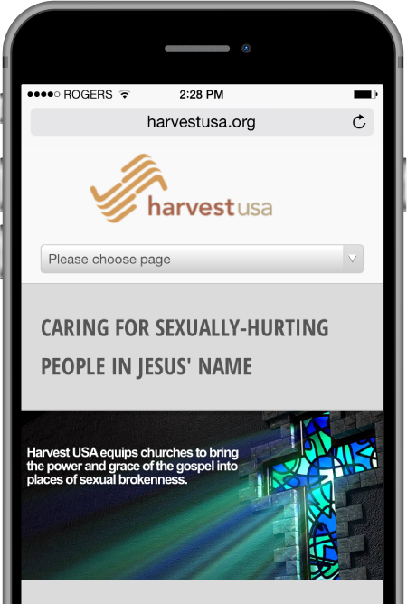
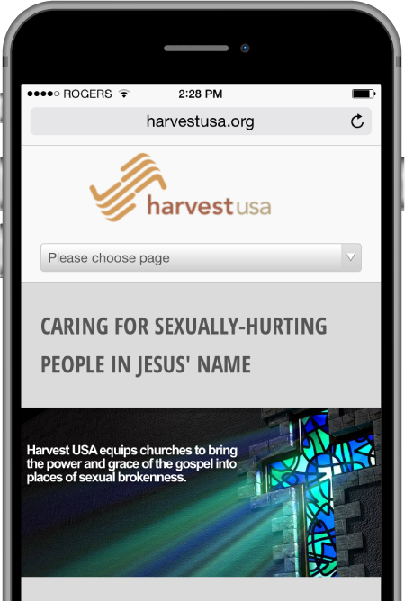

Situation - Harvest USA works to reach those who struggle with sex, sexual abuse, and addiction. As its mission has expanded, Harvest USA needed an updated website that would reflect their broadened mission and reach and came ot Polymath for help.

Action - Polymath redesigned and reachitected the HarvestUSA website. We offered recommendations on improving messaging, while saving money by repurposing some of HarvestUSA's existing content in new and creative ways.

Result - The launch of the new website has been overwhelmingly positive and renewed the organization's energy and vision. Irene Maguire, Executive Director of HarvestUSA wrote us to say, "Polymath isn't just the web developer of our online presence. I see them as active partners, advisors in helping us maintain a well-designed web presence... and responsive... They have taken the time to understand our mission and purpose... It is so rare to work with people who understand how to nuance content to deliver and end product that clearly reflects our purpose... Their ability to suggest design and create a web environment that suits our purpose and mission has been exemplary — this has been borne out by the response of site users."
 Launch Site

Launch Site
